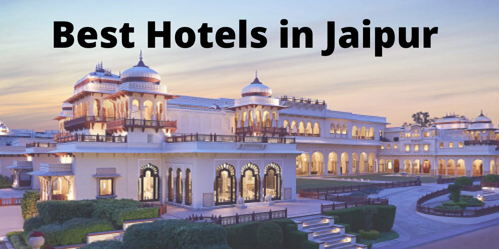

Best Hotels In Jaipur

Raddision Hotel
Five-star accommodation and service is available at
Radisson Blu Hotel in Jaipur, about 2 km from Jaipur Airport and the World Trade Centre.
Comfortable stay, safety, location etc.
Price : ₹20364/-
Lemon Tree Hotel
Jaipur Lemon Tree Hotel is located in the commercial area of Ashram Marg,
a 10-minute drive from the International Airport of the city.
great staff and service! comfortable and clean
Price : ₹2063/-
Lmb Hotel
Featuring a rooftop pool, Lmb Jaipur offers modern accommodation in Jaipur.
The property is 2 km from Jaipur Train Station, while the Central Museum is a 10-minute drive away.
Staff is good and rooms clean. After whole day of work outside coming to room felt like home.
Price : ₹1500/-
Heritage Hotel
Heritage Hotel Jaipur is located near Amber road, 7.6 km from Amber Fort.
The property features an outdoor pool, spa and 4 dining options.
Nahargarh Fort is 17.3 km while Jal Mahal is 9.4 km away. Wonderful property. Large rooms.
Brilliant staff. Good restaurants. Loved everything here.
Price : ₹10000/-
Club Room
Built in traditional style, Umaid Bhawan, located in Jaipur has beautifully carved balconies, attractive courtyards, open terraces, lovely garden and comfortable rooms with antique furnishings.
Stunning property with beautiful rooms and balcony.
Fab dinner at the idyllic rooftop restaurant with lovely entertainment.
Price : ₹2,435/-